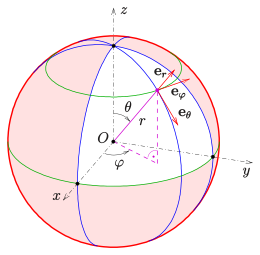
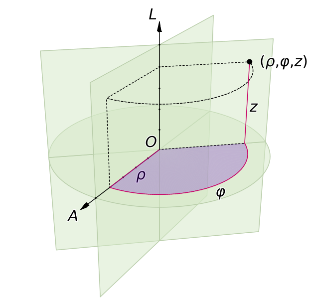
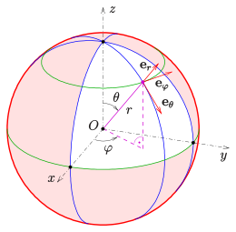
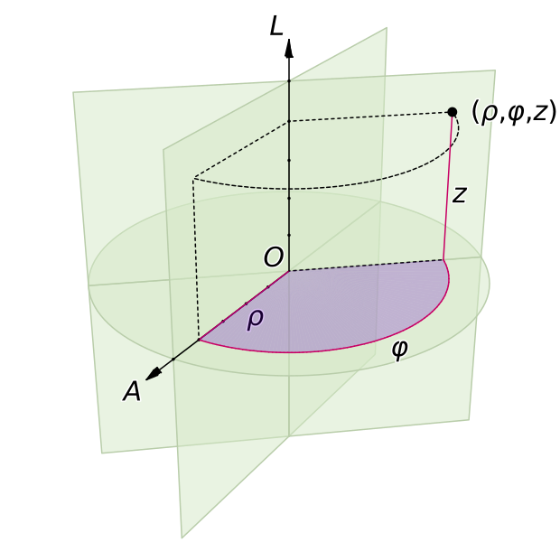
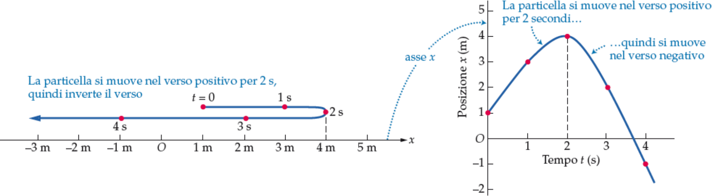
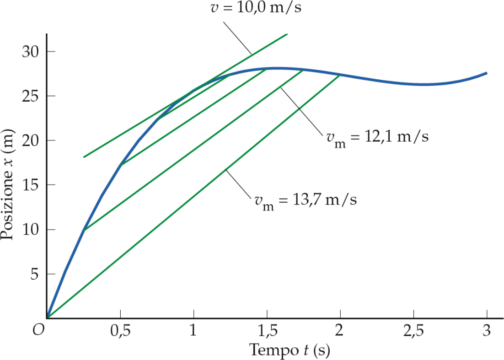
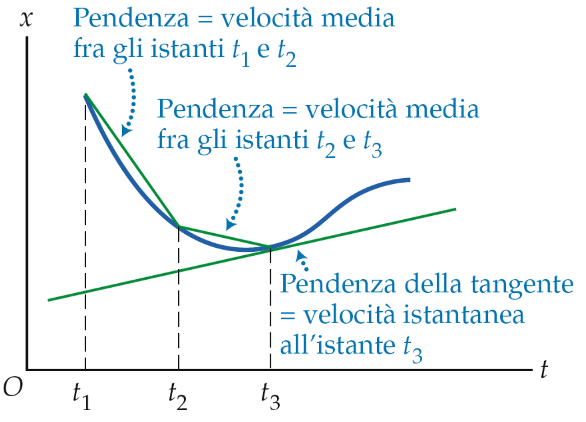
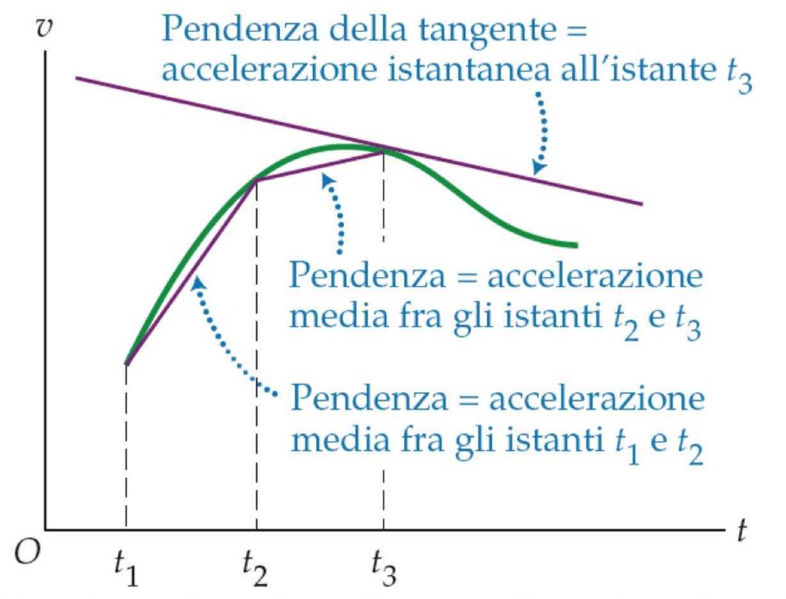
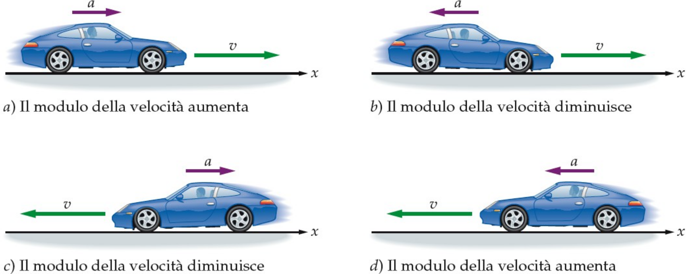

Meccanica: corpi in moto, caratteristiche e cause
\( \Downarrow \)
Dinamica: relazione tra moto e forze che lo causano
\( \Downarrow \)
Cinematica: studio del moto a prescindere dalle cause
\( \Downarrow \)
Cinematica del punto
\( \Downarrow \)
Cinematica del punto in una dimensione
Cinematica: grandezze fondamentali
- Spazio
- Tempo
- Velocità
- Accelerazione
Sistemi di riferimento: 1
Sistemi di riferimento: 2
Coordinate cartesiane
Coordinate sferiche
Coordinate cilindriche
 



Cinematica 1D: Spostamento vs distanza
- \( x_{\mathrm{CasaAmico}} = 0 \, (km) = 0 \, (m) \)
- \( x_{\mathrm{CasaMia}} = 2.1 \, (km) = 2100 \, (m) \)
- \( x_{\mathrm{Drogheria}} = 6.4 \, (km) = 6400 \, (m) \)
velocità media
- \( \Delta x_{1} = 4 \, (km) = 4000 \, (m) \)
- \( \Delta x_{2} = 4 \, (km) = 4000 \, (m) \)
- \( v_{1} = 30 \, (km/h) \approx 8.3 \, (m/s) \)
- \( v_{2} = 40 \, (km/h) \approx 13.9 \, (m/s) \)
velocità scalare media vs velocità media
- \( \Delta x_{1} = \Delta x_{2} = 100 \, (m) \)
- \( v_{1} = 10 \, (m/s) \)
- \( v_{2} = 5 \, (m/s) \)

interpretazione grafica della velocità media
velocità istantanea
\[ v(t) = \lim_{\Delta t \to 0} \frac{\Delta x}{\Delta t}= x'(t) = \frac{\mathrm{d}x(t)}{\mathrm{d}t} \]
velocità media vs velocità istantanea
\[ \frac{\Delta x}{\Delta t} \, \mathrm{vs} \, \frac{\mathrm{d}x(t)}{\mathrm{d}t} \]
accelerazione media vs accelerazione istantanea
\( a_{\mathrm{m}} = \frac{\Delta v}{\Delta t} \)
\( a(t) = \lim_{\Delta t \to 0} \frac{\Delta v}{\Delta t}= v'(t) = \frac{\mathrm{d}v(t)}{\mathrm{d}t} \)
accelerazione e velocità
\( x(t), \, v(t), a(t) \Rightarrow \) Integrali e derivate
| Derivate | Integrali |
| \( x(t) \) | \( x(t) \) |
| \( \Downarrow \, \frac{dx(t)}{dt} \, \Downarrow \) | \( \Uparrow \, \int v(t) dt \, \Uparrow\) |
| \( v(t) \) | \( v(t) \) |
| \( \Downarrow \, \frac{dv(t)}{dt} \, \Downarrow\) | \( \Uparrow \, \int a(t) dt \, \Uparrow\) |
| \( a(t) \) | \( a(t) \) |
Moto uniformemente accelerato
| Integrali | Derivate |
| \( a(t) = a \) | \( a(t) = a \) |
| \( \Downarrow \, \int_{0}^{t} a(t) dt \, \Downarrow\) | \( \Uparrow \, \frac{dv(t)}{dt} \, \Uparrow \) |
| \( v(t) = v_{0} + at \) | \( v(t) = v_{0} + at \) |
| \( \Downarrow \, \int_{0}^{t} v(t) dt \, \Downarrow\) | \( \Uparrow \, \frac{dx(t)}{dt} \, \Uparrow\) |
| \( x(t) = x_{0} + v_{0}t + \frac{1}{2}a t^{2} \) | \( x(t) = x_{0} + v_{0}t + \frac{1}{2}a t^{2} \) |
Moto Costante
Moto Rettilineo uniforme
Moto uniformemente accelerato
Caduta libera
\( g = 9.81 \, (m/s^2)\) accelerazione di gravità
| Integrali | Derivate |
| \( a(t) = -g \) | \( a(t) = -g \) |
| \( \Downarrow \, \int_{0}^{t} a(t) dt \, \Downarrow\) | \( \Uparrow \, \frac{dv(t)}{dt} \, \Uparrow \) |
| \( v(t) = v_{0} - gt \) | \( v(t) = v_{0} - gt \) |
| \( \Downarrow \, \int_{0}^{t} v(t) dt \, \Downarrow\) | \( \Uparrow \, \frac{dx(t)}{dt} \, \Uparrow\) |
| \( x(t) = x_{0} + v_{0}t - \frac{1}{2}g t^{2} \) | \( x(t) = x_{0} + v_{0}t - \frac{1}{2}g t^{2} \) |
Moto Armonico
| Derivate | Integrali |
| \( x(t) = A sin(\omega t + \phi) \) | \( x(t) = A sin(\omega t + \phi) \) |
| \( \Downarrow \, \frac{dx(t)}{dt} \, \Downarrow \) | \( \Uparrow \, \int_{0}^{t} v(t) dt \, \Uparrow\) |
| \( v(t) = \omega A cos(\omega t + \phi) \) | \( v(t) = \omega A cos(\omega t + \phi) \) |
| \( \Downarrow \, \frac{dv(t)}{dt} \, \Downarrow\) | \( \Uparrow \, \int_{0}^{t} a(t) dt \, \Uparrow\) |
| \( a(t) = - \omega^{2} A sin(\omega t + \phi)\) | \( a(t) = - \omega^{2} A sin(\omega t + \phi)\) |
\( A \Rightarrow Ampiezza \) \( \;\;\;\; \omega = 2 \pi f = \frac{2 \pi}{T} \Rightarrow Frequenza \, Angolare \) \( \;\;\;\; \phi \Rightarrow Fase \)